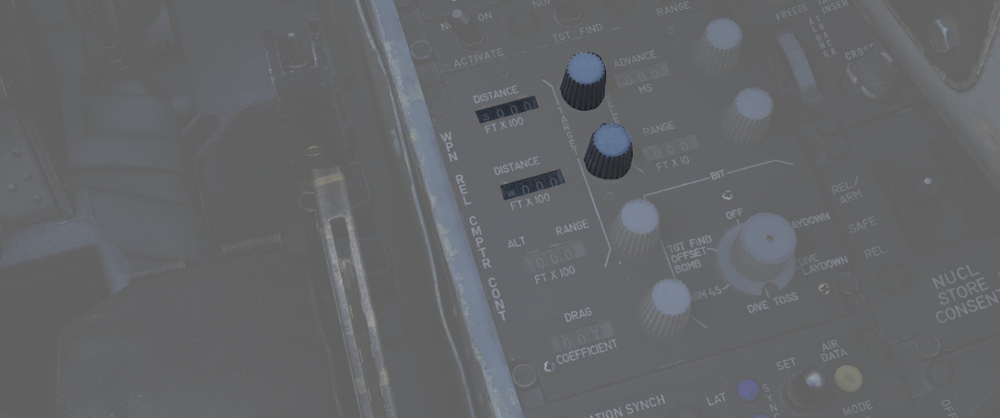
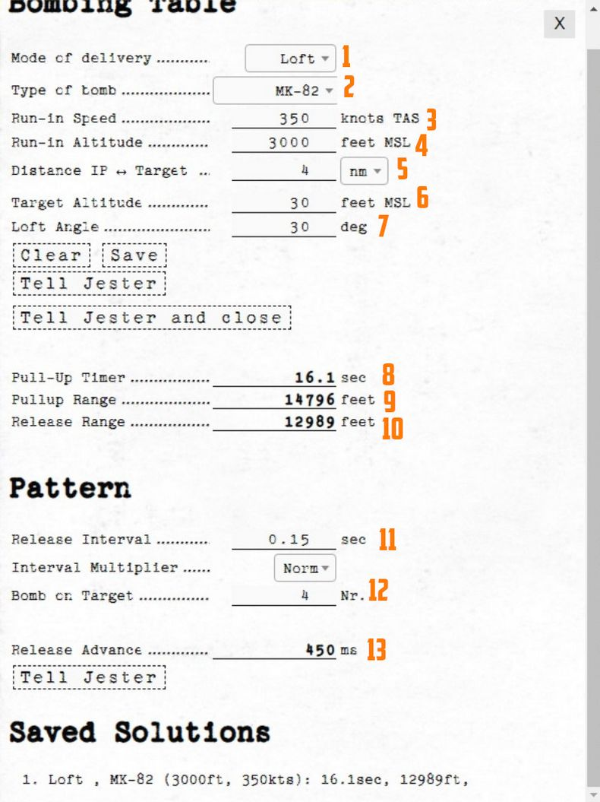

Bombing Computer
The bombing calculator provides the pilot and WSO with an easy way to calculate the needed values for the different bombing modes. You can use it to calculate every value (except for drag coefficient) that you need to drop precise ordinance on your target. It is opened with the hotkey RCtrl+B and can be closed with the same hotkey in-game. You can also bind it to a desired button in the controls tab.

Bombing Table
Input
Mode of Delivery
The first thing that should be selected is the Mode of delivery. You can choose between the following modes depending on your attack run.
- Direct
- Dive Toss (DT)
- TGT Find
- Dive Laydown (DL)
- Laydown (L)
- Offset
- Loft
- Over-the-shoulder (O/S)
- Over-the-shoulder instantaneous (O/S INST)
Type of bomb
At the Type of bomb selection you can choose which ordinance you want to drop. Always choose the correct ordinance to get correct results. You can select out of the following selection:
- MK-81
- MK-82
- MK-83
- MK-84
- M117
- CBU-87
- MK-82 AIR
- MK-82 Snakeye (SNK)
- BLU-107
Run-in Speed
Sets the speed at which you want to fly from the ingress point to bomb release. The speed is the true air speed and can be set in increments of 5 knots per click.
Run-in Altitude
Sets the altitude at which you want to start your bombing run. The run-in altitude must be held from the identification point till bomb release. You can set it in increments of 100ft per click.
Distance IP <-> Target
Sets the distance between the identification point and the target point. You can select from either setting it in nautical miles with a 0.1 nautical miles increment or switch the unit to feet with the drop-down on the right. The increment in feet is in 100ft per click. Unit conversion also converts your actual input.
Target altitude
Sets the target altitude in feet above msl. You can set it in increments of 10ft per click.
Dive Angle
Sets the desired dive angle for the attack run. Can be set in 1° increments per click. Needs to be set in Direct and Dive Toss mode.
Loft angle
Sets the desired lofting angle for the attack run. Can be set it in 1° increments per click. Only used for LABS modes.
Must also be set in the LABS panel.

Output
In general the Bombing Calculator will only give you the Output you need to set for the selected attack run.
Pull-up timer
Gives you the calculated pull-up timer in seconds that the WSO can put in the ARBCS computer.

Release range
Gives you the calculated bombing range in feet that the WSO can put in the WRCS panel.

Sight depression
Gives you the calculated manual sight depression in mils.
This can be put into the sight depression knob in order to align the reticle with the target for a manual MIL bombing solution.

Drag Coefficient
Gives you the Drag Coefficient that the WSO then can set in the WRCS panel.

N/S WRCS and E/W WRCS
Gives you the calculated offset distance values that the WSO then can set in the WRCS panel.

Controls
Clear
Resets all inputs to standard values.
Save
Saves the actual solution under the Bombing Solutions tab at the end of the page.
Tell Jester and Tell Jester and close
With this button the values calculated by the bombing calculator can be transferred to Jester. He will either confirm the input or tell you "can't do" when the input is not correct.
Pattern
Lets you put in values to calculate a release advance.
Pattern Input
Release Interval
Sets the release interval that the pilot sets. You can set it in 0.01 increments per click.
Interval Multiplier
Sets the interval multiplier that the pilot sets. You can select "Norm" or "x10" in the drop-down.
Bomb on Target
Lets you select the number of bomb that you want to hit the target. Every bomb before the selected bomb will hit in front of the target. The rest of the bombs will hit behind the target.
Pattern Output
Release Advance
Gives you the calculated release advance that the WSO can put in.

Bombing Solution
Shows the last saved bombing solutions. The line shows the inputs as following:
- Mode of Delivery
- Type of bomb
- Run-in Altitude
- Run-in Speed
Depending on mode it will also save the corresponding solutions that are needed to fly the attack run.
Example run
This is a step-by-step guide for an example loft bombing run with 12 Mk-82s. In our case we want the fourth bomb to hit the target. The first three should hit in front of the target and the rest should impact behind the target. For that we will use the release advance.
Planning: Advance
The first step in planning our loft bombing run is to identify and pick a target. In this example run we want to bombard the red units standing on the X.

Planning: IP
In the second step we will take a look at the F10-Map and make out an Identification Point (IP).
💡 The IP should always have a good visibility while flying the plane as optical identification of the IP will be the main method of timing the press of the bomb button.

For our target we chose the lake just north of the target as an IP. Now we measure the distance from our IP to the target and note it down as we need to input that to the bombing calculator. In this case the distance is 4.03 NM which we will cut off to 4 NM since the bombing calculator can only take 10ths of a mile.
Planning: Target
Now we also need to note the elevation of the target in MSL. To get that information we just click on a unit and read the altitude out of the box in the lower left corner. In this case the target elevation is 32 ft which we will cut down to 30 ft since the bombing calculator can only take values of tens.
💡 If the target unit is not visible on the F10 map you can also hover over the position of the enemy unit and read the elevation next to the coordinates in the upper left corner of the map.

Solution

Now that we have all needed values from the map we will put those in the bombing calculator.
(
(
(
(
(
(
(
(
(
(
(
(
(
Setup
Now the WSO can put in the Loft Angle at the release angle, the pull-up timer at the bombing timers and the release advance in the release advance in the WRCS.
Execution
Now you only need to fly the maneuver for the Loft delivery as precise as possible to make sure you hit the target right. The more precise you fly, the more precise your bombing run will be.